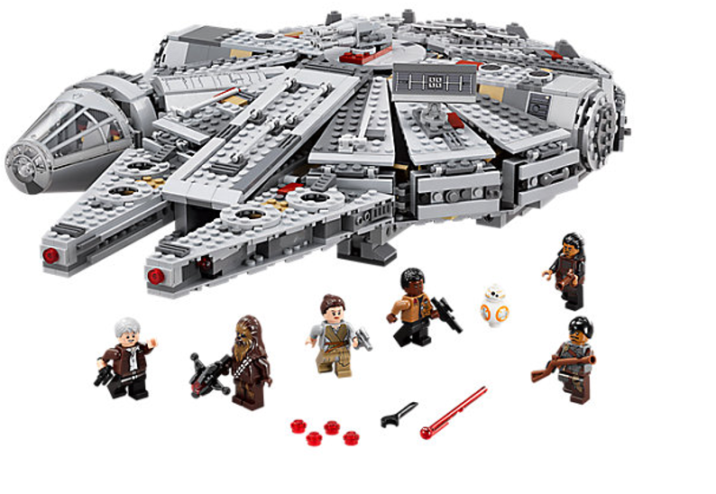
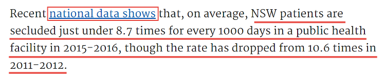
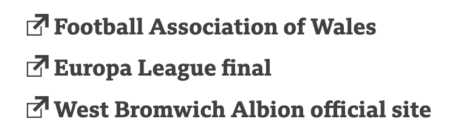
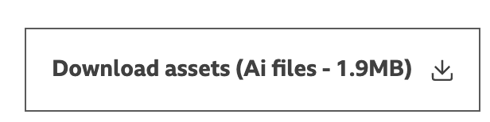
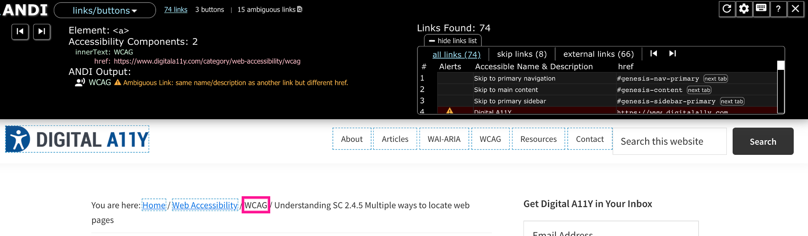

Slide instructions
SPACEBAR to move forward through slides.
SHIFT & SPACEBAR to move backwards through slides.
LEFT ARROW & RIGHT ARROW to move through sections.
ESC to see overview and ESC again to exit.
F to enter presentation mode and ESC to exit.
Session 2
Testing for Accessibility
What you will need
Download at: bit.ly/

Overview
- Images
- Links
- Skip links
Session 1 - Review

What do you recall?
- Four types of accessibility testing
- Which disability groups benefit from keyboard accessibility?
- Which disability groups benefit from good focus indication?
Images

Images
- As a: low vision or screen reader user
- I need: informative images to be described and decorative images to be ignored
- So that: I can understand the image purpose and not be distracted by unnecessary descriptions for decorative images

1.1.1 Non-text content (A)
All non-text content that is presented to the user has a text alternative that serves the equivalent purpose
Semi-automated test MS Insights | Visual check
Decorative, informative and functional images
| Image type | Purpose | Accessible name |
|---|---|---|
| Decorative | An image which has no content-related purpose | Use an empty alt, or apply as a background image via CSS |
| Informative | An image that contains valuable information and adds to the content | Requires an alt |
| Functional | An image which is part of a UI control - such as a button icon or link | Requires an alt |
Decorative images
Decorative images should be ignored by screen readers.

<img src="" alt="">Informative images
Informative images should include a text alternative that conveys the meaning or content that is displayed visually.
<img src="" alt="Millenium Falcon Lego set">Functional images
If an image is used as a link or button, then it should include a text alternative that describes:
- The function of the link (where it will take you)
- The function of the button (what it will do)
<button aria-label="Close">X</button><a href="#">
<img src="" alt="">
Millemnium Falcon Lego set
</a>Complex and composite images
Complex images
Complex images such as graphs or infographics should have:
- a short description in the alt attribute
- an onscreen link to text description either in-page (recommended) or a new page link

WebAIM Accessible infograph
- Short description in alt text
- In-page full text version
Composite images
Ensure the text alternative for one of the images describes the image as a whole.

<img src="fullstar.png" alt="">
<img src="fullstar.png" alt="">
<img src="fullstar.png" alt="">
<img src="emptystar.png" alt="">
<img src="emptystar.png" alt="3 stars out of 5">Checklist for images
| Criteria | Details | |
|---|---|---|
| 1.1.1 Informative image name | ||
| 1.1.1 Decorative image ignored |
Links
Links
- As a: screen reader user or user with motor or cognitive impairment
- I want: links to clearly describe where they will take me, and
- I want: links that take me to the same page to be labelled the same
- So that: it is easy for me to decide if I want to follow a link
2.4.4 Link purpose (In context) (A)
The purpose of each link can be determined from the link text alone or from the link text together with its context
Semi-automated test | MS Insights | Visual check
Link text is meaningful on its own

Link text is meaningful when combined with its context
Links that open tabs/windows/files are indicated
 
3.2.4 Consistent Identification (AA)
Components that have the same functionality within a set of Web pages are identified consistently.
Semi-automated test | MS Insights | Visual check
Consistent identification failure example
Checklist for links
| Criteria | Details | |
|---|---|---|
| 2.4.4 Link purpose | ||
| 3.2.4 Link consistency | ||
| Link notification |
Skip links
Skip links
- As a: screen reader user or keyboard user
- I want: to skip over content that is repeated across your website
- So that: I don’t have to navigate through it each time
2.4.1 Bypass Blocks (A)
A mechanism is available to bypass blocks of content that are repeated on multiple Web pages
Semi-automated test | Keyboard | Manual check
Skip link example

Checklist for skip links
| Criteria | Details | |
|---|---|---|
| 2.4.4 Skip link purpose | ||
| 2.4.1 Skip link function | ||
| 2.4.7 Focus visible | ||
| Skip link position |
Exercise 3
Link testing challenge
- Type: Individual
- Time: 10 mins
Instructions
- Use your keyboard and MS Insights to test links on your organisation/product homepage
- Post any issues you find to the chat as follows:
- 2.4.4 Link purpose: (Describe issue)
- 2.4.7 Focus visible:(Describe issue)
- 2.4.1 Bypass Blocks:(Describe issue)
- Best practice:(Describe issue)
Session 2 - That's a Wrap!